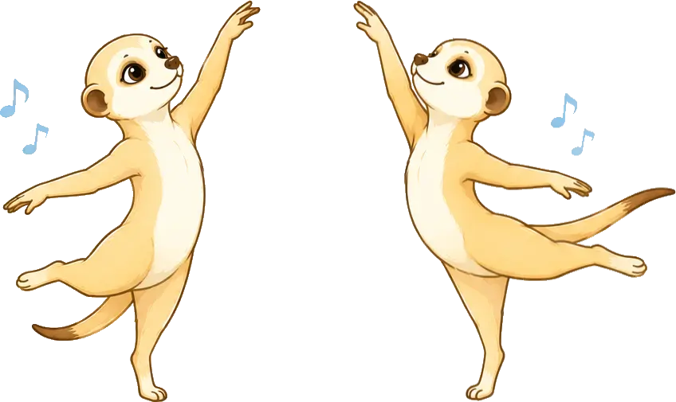
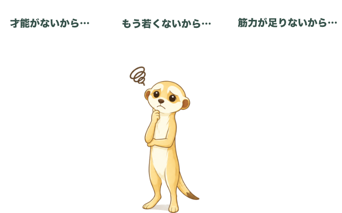
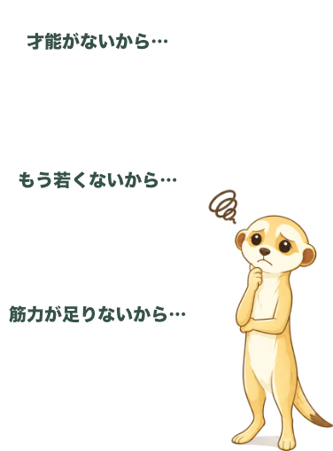
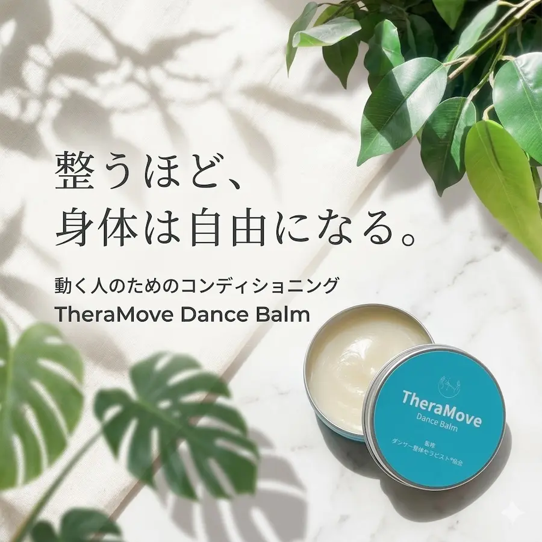

ダンスでこんなお悩みはありませんか？
- 練習しているのに思うように上達しない
- 振り覚えが悪い
- ターンアウトの可動域をもっと広げたい
- ルルベが安定しない
- ターンでスポットが付けられない
- ジャンプでもっと高さを出したい
- 背中が思うように反れない
- ヘッドロールがスムーズにできない
- ウェーブをもっと滑らかにつなげたい
- アイソレーションが思うように動かない
ダンス上達サポートとは
ダンス上達サポートは、身体の土台から整え、
踊りやすい身体づくりを目指すパーソナルセッションです。
「何度練習しても思うように踊れない」「振付が覚えられない」「ターンやバランスが安定しない」
といった悩みは、技術だけではなく、身体の状態が影響していることがあります。
Re:moveでは、一人ひとりの身体の状態や動きを確認し、
その方に必要なアプローチを組み合わせながら、身体の土台からサポートします。
動きやすくなることで、レッスンで学んだことを活かしやすくなり、
より効率的な上達につながります。

なぜ上達しないのか
練習しているのに思うように上達しない。
多くの方は、その理由を次のように考えています。


上達しない理由は、才能や年齢ではなく、身体にあることがほとんどです
「才能がないから」「もう若くないから」と思っていても、上達を妨げているのは才能や年齢ではなく、自分では気付きにくい身体の状態であることが少なくありません。
そして、その身体の状態は一人ひとり異なります。
「筋力をつければ解決する」などと思われがちですが、身体の土台が整っていないまま筋力だけを高めても、本来とは異なる身体の使い方が身についてしまうことがあります。
Re:moveでは、筋力をつける前に、まず身体全体を確認し、その方にとって何が上達を妨げているのかを探していきます。
Re:moveのアプローチ
身体の状態を確認し、
その方に必要なアプローチを行いながら、
踊りやすい身体づくりをサポートします。
身体の状態を確認する
同じ「ターンが苦手」「振付が覚えにくい」という悩みでも、影響している身体の状態は一人ひとり異なります。
動きだけを見るのではなく、身体全体の状態を確認しながら、上達を妨げている要因を探します。
身体の状態に合わせて整える
確認した身体の状態に合わせて、整体やピラティスなど必要なアプローチを組み合わせます。
身体の土台を整えることで、レッスンで学んだ動きを活かしやすい身体づくりを目指します。

Home Care
TheraMove
Dance Balm
セッション後のコンディション維持に
整えた身体を、
レッスンでも日常でも活かすために。
ダンサー整体の現場から生まれた
TheraMove Dance Balm。
レッスン前後のセルフケアや、
日々の身体づくり
・コンディション維持をサポートします。
セッション時には実際にお試しいただけます。
セルフケア方法とあわせて
使い方もご案内しています。
気に入っていただけた場合は
その場でご購入いただけます。
遠方の方やリピート購入をご希望の方は、
オンラインショップもご利用いただけます。
Q & A
ダンス上達サポートについてのよくある質問
Q.ダンス上達サポートではどんなことを行いますか？
A.身体の状態や動きを確認しながら、ダンサー整体・反射の統合ワーク・療育整体・PNF・ピラティスなどを組み合わせてサポートします。
姿勢や動作だけでなく、感覚や発達などの視点も取り入れながら、上達を妨げている要因を探していきます。
大人からダンスを始めた方や、練習しても思うように上達しない方のサポートに力を入れています。
Q.大人からダンスを始めたのですが上達できますか？
A.大人になってからダンスを始めた方でも、身体の土台を見直すことで変化を感じることは十分に可能です。
私自身が大人になってからダンスを始め、ただ練習量を増やすのではなく、身体の構造や動きの仕組みを理解し、体を整え直すことで踊りが変わった経験があります。
その経験をもとにサポートしています。
Q.身体が硬くても変われますか？
A.私自身も幼少期は非常に体が硬く、大人になってから身体を変えてきた経験があります。
身体の使い方や感覚、力の伝わり方などを見直すことで、動きやすさや踊りやすさに変化が見られるケースもあります。
Examplesでご紹介しているように、一回の施術やセッションでも姿勢や動きに変化が見られることは珍しくありません。
私自身も大人になってから身体を変えてきた一人だからこそ、身体が硬いことを理由に可能性を決めつけてほしくないと考えています。
Q.ダンスレッスンとの違いは何ですか？
A.Re:moveではダンスの技術指導ではなく、その動きを行うための身体の状態や使い方に着目してサポートします。
「分かっているのにできない」「練習しても変わらない」といった悩みを身体の視点からサポートしています。
Q.振付がなかなか覚えられないのですが、身体の状態が関係することはありますか？
A.振り覚えの悩みは、練習量や記憶力だけが原因とは限らず、身体の状態が影響しているケースもあります。
例えば、乳幼児期に無意識に起こる「原始反射」と呼ばれる反応が大人になっても残っていることで、集中しづらさや身体のコントロールに影響している場合があります。
また、自律神経の状態によって身体が無意識に緊張しやすく、動きを覚えることに必要以上の意識を使ってしまう、身体の連動性が低下していることで一つ一つの動きを覚える負担が増えてしまうなど、さまざまな要因が考えられます。
このような身体の状態を整えることで、振りの覚えやすさにつながります。
Q.どのくらいの頻度で受ければ良いですか？
A.身体の状態や目標によって異なりますが、整えた身体の状態を定着させ、ダンスで活かしていくためには、初めのうちは週1回程度の継続がおすすめです。
身体の状態が安定してきた段階では、2週に1回など状態に合わせて頻度を調整していきます。
セッションでは身体を整えるだけでなく、ご自身でも取り組めるセルフケアもお伝えしています。
セッションと日常での取り組みを組み合わせることで、より身体の変化を感じやすくなります。
Contact
ご相談・ご予約はこちら
「練習しているのに思うように上達しない」
「自分の身体のどこに原因があるのか分からない」
そんな方もお気軽にご相談ください
ご予約は、予約フォームまたは公式LINEより受け付けています。
ご予約前に確認したいことやご相談がある場合は、
公式LINEからお気軽にお問い合わせください。
Instagramからのお問い合わせをご希望の方は、DMよりご連絡ください。